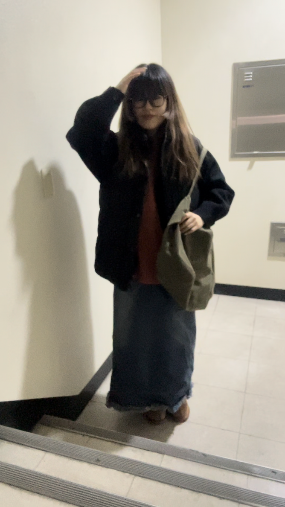

ARCHIVE
Daily Look
Daily Look
at
-7.3
-7.3

니트는 정말 좋아!
[at -7.3] 니트 참 좋다.. 거의 한달을 기다려서 받은 니트이다. 받았을 때는 너무 좋았는데, 막상 입어보니 어울리는 하의가 없더라(내게..) 새로운 옷을 사기 보단, 어울릴 만한 아이템을 찾다가 여름에 아주 잘 입고 다녔던 청 멜빵 원피스를 매치해 줬다. 아래 쪽에 숄이 들어가서 그런지 밋밋함이 없어서 좋다. 슈즈는 올해 초에 미리 장만해 둔 호피 어그를 매치해줬다. 호피랑 니트가 컬러나 분위기 조합이 좋아서 그런지 니트를 입을 때마다 어그를 신고 싶은 충동이..! 그런데 검정 코트까지 입어주니.. 밖에선 약간 밋밋 그자체더라.. ㅠ 그래서 안경을 매치해줬고, 여기에 더해서 가끔은 헤어밴드까지 해준다면! 적당히 아메아메한 룩 완성 :)
[at -7.3] 니트 참 좋다.. 거의 한달을 기다려서 받은 니트이다. 받았을 때는 너무 좋았는데, 막상 입어보니 어울리는 하의가 없더라(내게..) 새로운 옷을 사기 보단, 어울릴 만한 아이템을 찾다가 여름에 아주 잘 입고 다녔던 청 멜빵 원피스를 매치해 줬다. 아래 쪽에 숄이 들어가서 그런지 밋밋함이 없어서 좋다. 슈즈는 올해 초에 미리 장만해 둔 호피 어그를 매치해줬다. 호피랑 니트가 컬러나 분위기 조합이 좋아서 그런지 니트를 입을 때마다 어그를 신고 싶은 충동이..! 그런데 검정 코트까지 입어주니.. 밖에선 약간 밋밋 그자체더라.. ㅠ 그래서 안경을 매치해줬고, 여기에 더해서 가끔은 헤어밴드까지 해준다면! 적당히 아메아메한 룩 완성 :)
color